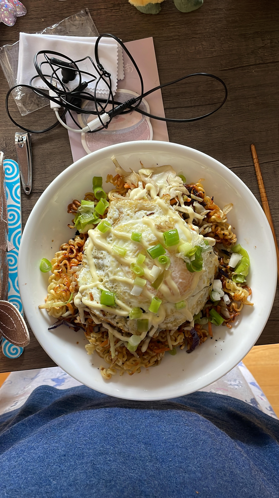

Almost Bubble Maineia Spicy Pan Fried Ramen

Description
This recipe aims to recreate the dish "Spicy Pan Fried Ramen" that used to be served at the now-closed restaurant in Portland Maine called
Bubble Maineia. It is a fairly simple dish made with Shin packaged ramen, cabbage, and eggs. It can be made more or less spicy if you
would like. The flavour is hard to describe, but it is absolutely delicious. The inclusion of the fried egg makes it very creamy and is
the best part of the dish.
Ingredients
Ingredients here are presented for one serving.
- 1 package of Shin Ramen
- 1/3rd of a bag of plain coleslaw mix or 1 1/2 cups of shredded cabbage
- 1 egg
- Neutral oil, about 3 tablespoons
- Garlic powder, about 1/4th of a teaspoon
- Onion powder, about 1/4th of a teaspoon
- Soy sauce, about 1 tablespoon
- Salt to taste
- (Optional) Kewpie mayonnaise
Steps
- First, remove the noodles from the package. Keep the flavouring packet, but throw away the dried vegetables.
- Boil a pot of water, enough to cover a pack of noodles. Cook the noodles on medium-high heat for 3 minutes.
- While the noodles are cooking, heat a cast-iron pan on medium heat with 1 tablespoon of oil.
- When the noodles are done, strain them, and then add them to the pan.
- Add the Shin flavour packet. You can add more or less of the packet to change the spice level.
- Add the garlic and onion powders, and then the soy sauce.
- Mix everything in the pan and then let the noodles cook for about 5 minutes. Stir occasionally. If you want them to be
crispier, you can stir less.
- Remove the noodles from the pan and place in a serving bowl or dish.
- Add 1 tablespoon of oil to the pan. Then, add the cabbage.
- Cook the cabbage for about 5-7 minutes, stirring occasionally. You want the cabbage to wilt and get a little charred, but
not crispy.
- Remove the cabbage from the pan and add it on top of the noodles.
- Add the last tablespoon of oil to the pan. Crack the egg into the pan and sprinkle salt on it. Cook over-easy or to taste.
It is better if the yolk is still runny.
- Remove the egg and place on top of the cabbage. Serve.
- (Optional) Add Kewpie mayo on top of the dish before serving for extra creaminess.
Home